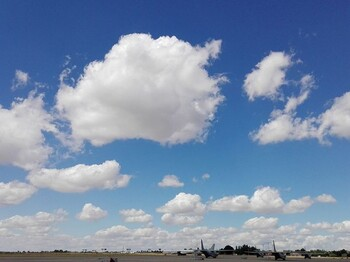

TIPOS DE NUBES QUE EXISTEN
|  | Cúmulos |
|---|---|
| Los cúmulos o cúmulus (cumulus en latín) son un tipo de nube que exhibe considerable desarrollo vertical, tiene bordes claramente definidos y un aspecto que a menudo se describe como algodonoso o parecido al 'algodón'. Los cúmulos pueden formarse solos, en filas o en grupos. Son indicadores de buen tiempo | |
| Estratocúmulos | |
| Un estratocúmulos pertenece a un tipo de género de nubes que se caracterizan por ser grandes masas oscuras, redondeados, generalmente en grupos, líneas o en ondas, cuyo elementos individuales son más grandes que los de altocumulus, y todo el ser de menor altitud, por lo general por debajo de 2400 metros (8.000 pies). | |
| Estratos | |
| Stratus o estrato, del latín ‘extendida’, ‘ensanchada’, es una nube caracterizada por capas horizontales con una base uniforme, en oposición a las nubes convectivas que son tan altas como anchas. Más específicamente, el término se usa para describir nubes chatas, sin formas, de baja altitud (por debajo de 2,4 km), siendo de color gris negruzco hasta blanquecinas. Estas nubes son esencialmente niebla por encima del nivel 0, formadas tanto por nieblas ascendentes o cuando aire frío se mueve a bajas altitudes sobre una región. | |
| Cirrocúmulos | |
| Los cirrocúmulos o cirrocumulus son nubes que se encuentran en las capas altas del cielo y se forman horizontalmente. Se dan entre los 6 y los 12 km de altitud. Su símbolo es: Se forman a partir de cirros o cirrostratos cuando estas son calentadas suavemente desde abajo. | |
| Altoestrato | |
| Estos son un tipo de nube de una clase caracterizada por una gran lámina generalmente grisácea uniforme, más claras en color que los nimbostratus y más oscuras que los cirroestratos. El término en latín altostratus puede traducirse como ‘los más altos estratos’. | |
| Cirros | |
| Un cirrus o cirro es un tipo de nube compuesta de cristales de hielo y caracterizada por bandas delgadas, finas, acompañadas por copetes. A veces estas nubes en voluta son tan extensas que virtualmente resultan indistinguibles una de otras, formando una hoja o velo llamado cirrostratos. | |
| Cirroestratos | |
| Los cirrostratos son un tipo de nubes altas caracterizadas por estar compuestas de cristales de hielo y frecuentemente por la producción del fenómeno óptico halo. Suelen aparecer como velos blanquecinos y, a menudo, fibrosos; a veces cubriendo todo el cielo y a veces gran parte. | |
| Nimboestratos | |
| Un nimbostratus o nimboestrato es una nube oscura caracterizada por capas uniformes, generalmente de color gris oscuro. Este tipo de nube no se presenta siempre a la misma altura, de ahí que no se la pueda considerar estrictamente como nube de tipo bajo o medio, si bien su base suele estar en torno a los 2000 metros. | |
| Cumulonimbus | |
| Los cumulonimbus o cumulonimbos son nubes de gran desarrollo vertical, internamente formadas por una columna de aire cálido y húmedo que se eleva en forma de espiral rotatoria. Su base suele encontrarse a menos de 2 km de altura mientras que la cima puede alcanzar unos 15 a 20 km de altitud. | |
| Cúmulos Congestus o "Alcachofas" | |
| Debido a que las cumulus congestus se producen por corrientes ascensionales, son típicamente verticales más que en ancho, y sus topes pueden alcanzar 5 o 6 km. Las cumulus congestus se forman, generalmente, del desarrollo de cumulus mediocris, pero también puede hacerlo desde los altocumulus castellanus o desde stratocumulus castellanus. Los cumulus congestus maduran en cumulonimbus calvus en condiciones de suficiente inestabilidad. Esta transformación puede verse con la presencia de partes suaves, fibrosas, o estriadas en los topes de las nubes. Este tipo de nubes produce precipitación, a veces en abundancia. Las especies de congestus pueden encontrarse solo en el género cumulus. |